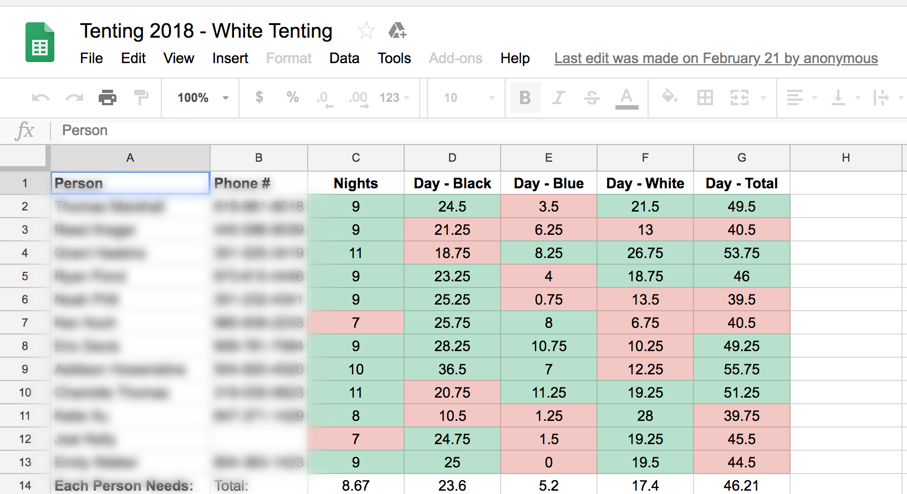
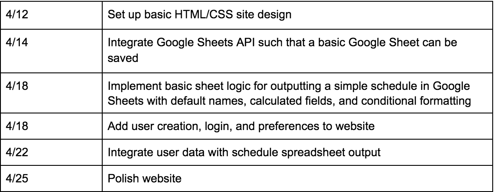

Team 4: Blake Becerra and Addison Howenstine
Features
For Tent Captain
- Captain can log in with their Google account and output a tenting or Walk Up Line schedule by specifying the days and times when a specific number of people are required to be in K-ville (specify when Black/Blue/White tenting are as well as grace)
- Save tenting templates to output multiple spreadsheets for different weeks or Walk Up Line schedules
- Add other members of the tent and keep track of their schedules
- Secure login using Google to simplify spreadsheet export
For Tent Members
- User can add their weekly schedule so tent members can see who is free when. Site can keep track of who is busy at specific times
- Secure login using Google to simplify spreadsheet export
Schedule Preferences and Customization
- Keep track of how many night hours and day hours each member spends in the tent
- Recalculate hours and nights in Kville if there are long unforeseen grace periods
- Some tents may weight time differently, for example counting night hours as a block of hours vs requiring members to spend a specific number of nights in the tent. We will talk to potential users about their schedules and add selectable preferences for outputting a spreadsheet. These settings will be stored for outputting new schedules
- Use 12 hour time with AM or PM or 24 hour time
Notifications
- Users can set up email and text reminders for shifts, black tenting events, and games.
- Stretch Goal: Integrate Facebook Messenger or GroupMe to be able to notify tentmates of empty shifts, black tenting events, and other Kville events.
Data
- Users can add unavailable time blocks with 15 minute time intervals (e.g. unavailable between 8:15 - 10:30).
- Calculated amount of time every user has spent in Kville
- How many hours every user will need to spend in Kville
- Tents’ preferences to if they will have night shifts as a block or count them as regular hours
- Users’ general weekly schedule to prefill times that they are unavailable
APIs
Google Identity Platform
- Used for logins and for linking user data to a Google Docs account
Google Sheets API
- Use preferences set by Tent Captain to output a schedule that will be saved to users’ Google Drive accounts and shared with all tent members
- API allows for value entries, formulas, and conditional formatting—all of which will be used to create a user friendly spreadsheet that is easily displays relevant data for the users
Example Spreadsheets

Timeline
